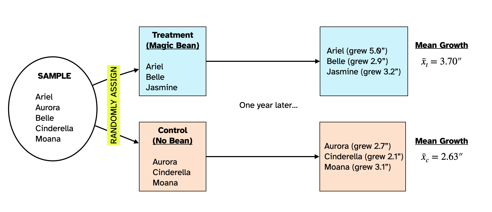
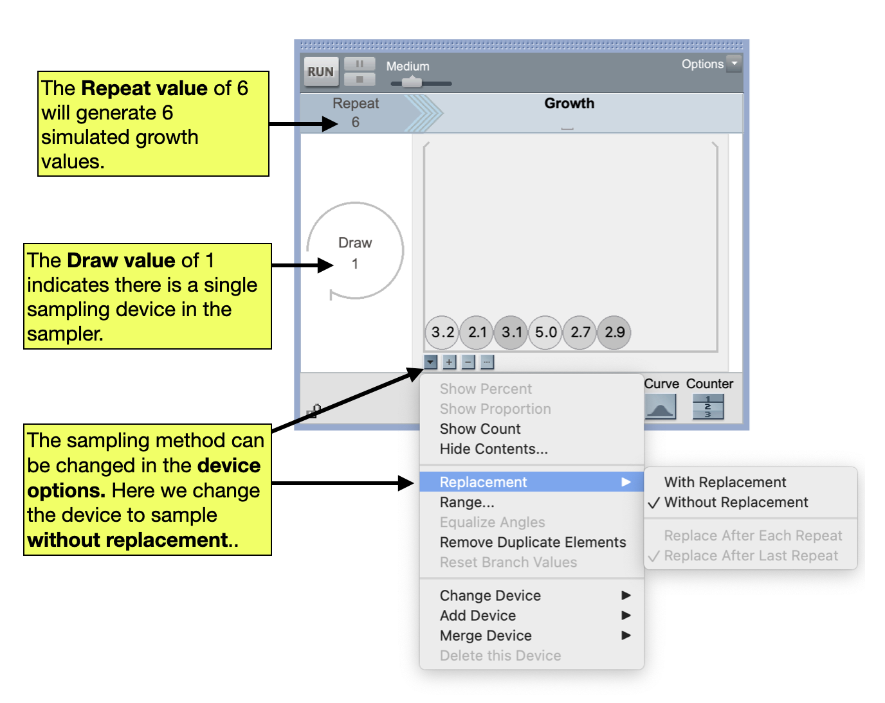
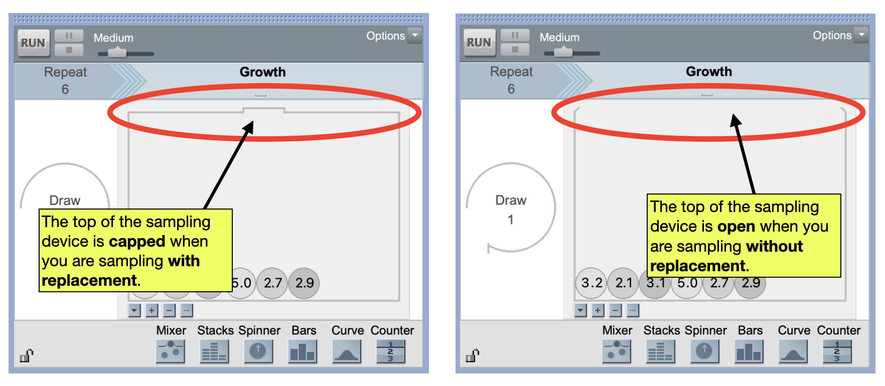
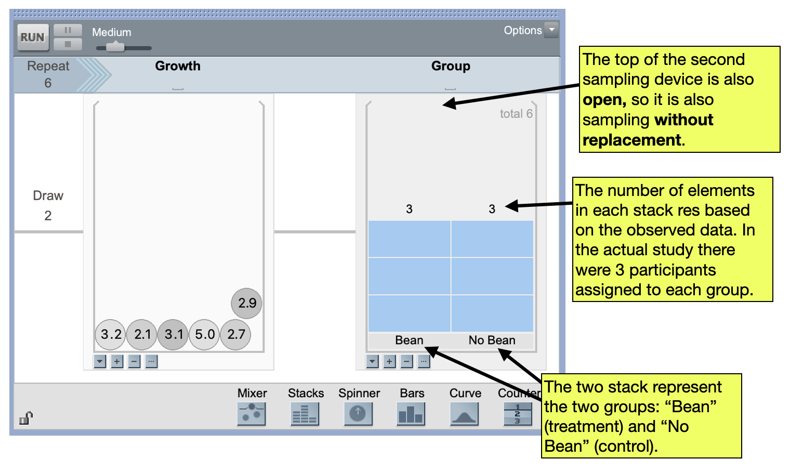
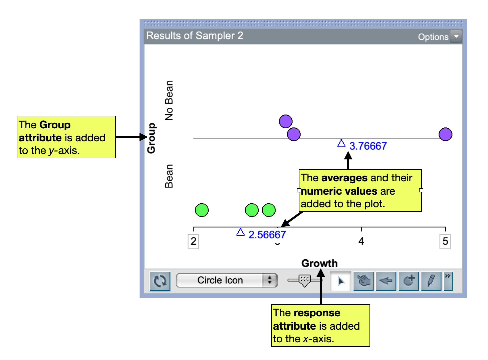
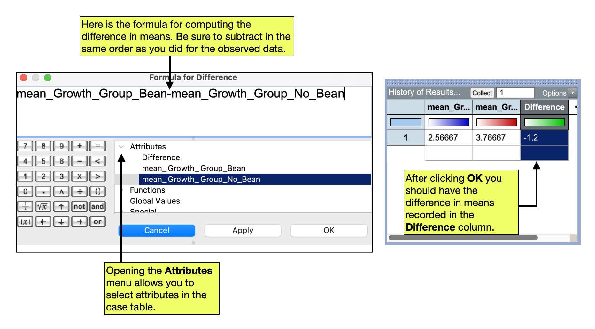
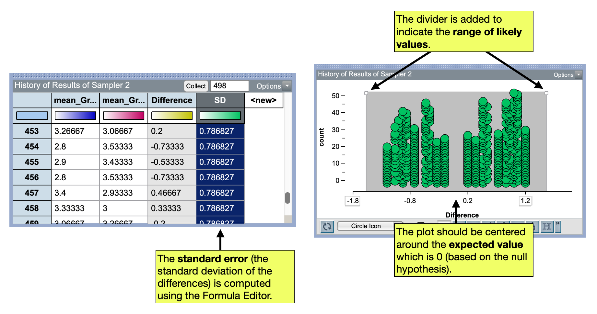

TinkerPlots 101: Randomization Test
The hypothesis test we perform to evaluate group differences is referred to as a randomization test. In this test, we are going to model experimental variation assuming the null hypothesis that there is no effect of treatment on the outcome is true. Using that model, we will replicate the random assignment of subjects (and their outcome value) to the two conditions/groups. Based on that re-randomization to groups we will calculate and record a measure of how different the conditions are on the outcome (e.g., calculate the difference in means). We will repeat this re-randomization and summarization a large number of times. This will give us a sense for the experiemental variation (i.e., the variation that is expected in the differences just because of random assignment).
To illustrate how to use TinkerPlots to carry out a randomization test, we will again visit our example from the previous reading:
Dr. Bunsen Honeydew wants to evaluate the effects of a magic bean that he hypothesizes will help people grow faster. He plans to evaluate this by carrying out a statistical experiment in which he will randomly assign six subjects he has recruited to two groups. The people in the first group will be given the magic bean (treatment group) and the people in the second group will not be given the magic bean (control group). After a year, he will measure the heights of people in both groups and compare their means to evaluate whether the magic bean impacted the treatment group’s heights.
Observed Data
Figure 1 shows the random assignment of the six people in the sample to the treatment and control groups and the results of Dr. Honeydew’s study. The people in the treatment group grew on average 3.70 inches over the course of the year and those in the control group grew on average 2.63 inches over the course of the year.
The people in the treatment group who consumed the magic bean grew 1.07 inches more than the people in the control group did. To get that we used:
\[ \begin{split} \text{Difference} &= \bar{x}_{t} - \bar{x}_c\\ &= 3.70 - 2.63 \\ &= 1.07 \end{split} \]
In this equation, \(\bar{x}_t\) is the mean growth for the treatment group and \(\bar{x}_c\) is the mean growth for the control group.
Statistical Hypotheses for Comparing Groups
The two explanations we have for people’s growth constitute the statistical hypotheses, namely that (1) the treatment adds to peoples natural growth, or (2) it doesn’t. Writing these hypotheses:
\[ \begin{split} H_0:&~ \text{There is no effect of treatment (magic bean) on peoples’ growth.}\\ H_A:&~ \text{There is an effect of treatment (magic bean) on peoples’ growth.} \end{split} \]
Remember that if there is no effect of treatment, then on average, the difference between the means for the two groups is 0. So another way we can write the statistical hypothesis is in terms of this difference. Here we write the hypotheses using the language of mathematics:
\[ \begin{split} H_0:&~ \mu_t - \mu_c = 0\\ H_A:&~ \mu_t - \mu_c > 0 \end{split} \]
Model
In order to carry out a randomization test using TinkerPlots, you need to include two sampling devices in the sampler. The first sampling device will include the observed response data for all of the subjects. The second device will contain the observed grouping data (i.e., the conditions) for all of the subjects. In our example, the reponses are the amount of growth each person exhibited, and the group/condition data are the conditions of “Bean” (treatment) and “No Bean” (control).
- Responses Data: 5.0, 2.9, 3.2, 2.7, 2.1, 3.1
- Grouping Data: Bean, Bean, Bean, No Bean, No Bean, No Bean
Note that since we need to have a response and group for each participant, there should be 6 total responses and 6 total groups. In TinkerPlots, we will begin by setting up a sampler that includes a Mixer containing the response data for the 6 subjects. We will also change how the mixer samples elements. All of our sampling devices to date in this class have been sampling with replacement—that is the exact same element can be sampled over and over. This is appropriate when we are modeling sampling variation. But when modeling experimental variation, we are trying to mimic the random assignment to different groups, and people are only assinged to a group one time. To mimic this we need to sample without replacement.
- You can change how the sampling device samples elements by clicking on the
Device Optionsbutton for the sampling device (upside-down triangle below the device). - To sample with replacement select
Replacement > Without Replacement.

PROTIP
To tell whether you are sampling with or without replacement, you can look at the top of the sampling device. If the top of the sampling device is capped, then the device is sampling with replacement. If the top of the sampling device is open, then the device is sampling without replacement.

In addition to randomly generating the response values, we also need to randomly generate the group that the value will be randomly assigned to. To do this, we will link a second sampling device to the mixer. (This is similar to the sampler you worked with in the Pet Factory activity which had multiple linked samplers.) A good sampling device to use for the groups is a Stacks device. To add a linked Stacks sampling device to your sampler:
- Drag a Stacks sampling device from the device menu to the right-hand side of the existing mixer. The sampler should now contain two devices linked by a grey line.
- Add the names of the possible conditions/groups as elements. (In our example there are two elements–“Bean” and “No Bean”)
- Click on Stacks
Device Options(upside-down triangle below the sampling device) and selectShow Count. Change the count value for the “Bean” label to reflect the number of participants originally assigned to the magic bean condition (in our example this is 3). Change the count value for the “No Bean” label to reflect the number of participants originally assigned to the control condition (again, this is 3 in our example). - Change the device to sample values without replacement.

To model the random assignment of the treatment condition labels that might have occurred, you need to produce simulated data from another model that generates labels of JFK and JFKC. To do this you will use the Stacks sampling device. We also need to include this sampling device in the same Sampler as the outcomes. To do this, you link multiple sampling devices in the same sampler the same way you did in the Cat Factory course activity.
FYI
When you add a second sampling device, the Draw value will automatically change to the number of devices included in the sampler. Double-check that it is 2 when you have two sampling devices.
Simulate: First Trial
Once the sampler has been set up, the Run Button can be clicked to carry out the first simulated random assignment. The outcomes from both linked devices are recorded in the case table, each in their own attribute. In addition, an attribute called Join is also created that includes the outcomes of both linked devices separated by a comma. (We will ignore this column!)
As with every simulation we have done, we will plot the simulated data from this first trial and compute a summary measure, which for our example is the difference in means. To plot the data we will drag the response attribute (growth values) to the x-axis of the plot. This should be fully separated and stacked. Then, the group/condition attribute can be dragged to the y-axis of the plot. Finally, the averages can be added to the plot along with their numeric values in the same manner as in previous simulations.

At this point we could calculate the difference in means (subtracting in the same order as we did for the observed data), but we want to have TinkerPlots automate this, so we are going to collect both means. Remember, to collect a mean we right-click on the mean triangle and select Collect Statistic. Once the mean has been added to the case table, collect the other mean as well. Now you should have both the “Bean” and “No Bean” means in a case table o in the same row (but in different columns).
To compute the difference in means we will use the Formula Editor. To do this:
- Create a third attribute (column) in the case table by clicking the column name,
<new>. Rename this attribute “Difference” - Select the “Difference” attribute to highlight it and then right-click the attribute and select
Edit Formula. - Select the
Attributetriangle to display the names of the case table’s attributes in theFormula Editor. - Double-click the attribute for the “Bean” groups mean value. Then click the subtraction key (
–) in theFormula Editorcalculator. Finally, double-click the attribute for the “No Bean” group’s mean value. - Click the
Applybutton and then clickOK.

Based on this simulated random assignment,, the difference in means is \(-1.2\).
Simulate: Collect Results from Additional Trials
Once you have collected the means and used the Formula Editor to compute the difference, click the Run button on your sampler again. This should add another set of means and their difference to your case table. Click Run a couple times to be sure that the simulation is working. Once you are convinced the simulation is working properly, collect the difference in means for additional trials so tyhat you have 500 total differences.
Once you have the 500 simulated differences, we can plot them and also compute the standard error to quantify the amount of experimental variation. After plotting them, we should do a spot check that the average is near 0. (Recall that 0 is the expected value of the difference underthe null hypothesis and that the plot should be centered at the expected value.)
In our example, the standard error is 0.7868. We can use this to compue the range of likely values:
\[ \begin{split} \text{Range of Likely Values} &= \text{Expected Value} \pm 2(SE) \\ &= 0 \pm 2(0.7868) \\ &= -1.57~\text{to}~1.57 \end{split} \]
That is:
If the null hypothesis is true (and there is no effect of the magic bean), we expect to see a difference in means of between \(-1.57\) and 1.57.
We can also display this range of likely values on our plot using the divider tool.

Evaluate
Finally, we can evaluate our observed difference in means (which was 1.07) using our range of likely values to make a decision about the null hypothesis and answer our research question. In our example, the observed difference of 1.07 is within the range of likely values which implies we would fail to reject the null hypothesis; we conclude that there is no difference in the mean growth between the magic bean group and the no magic bean group. In other words, there is no evidence to support that the magic bean is contributing to people’s growth.